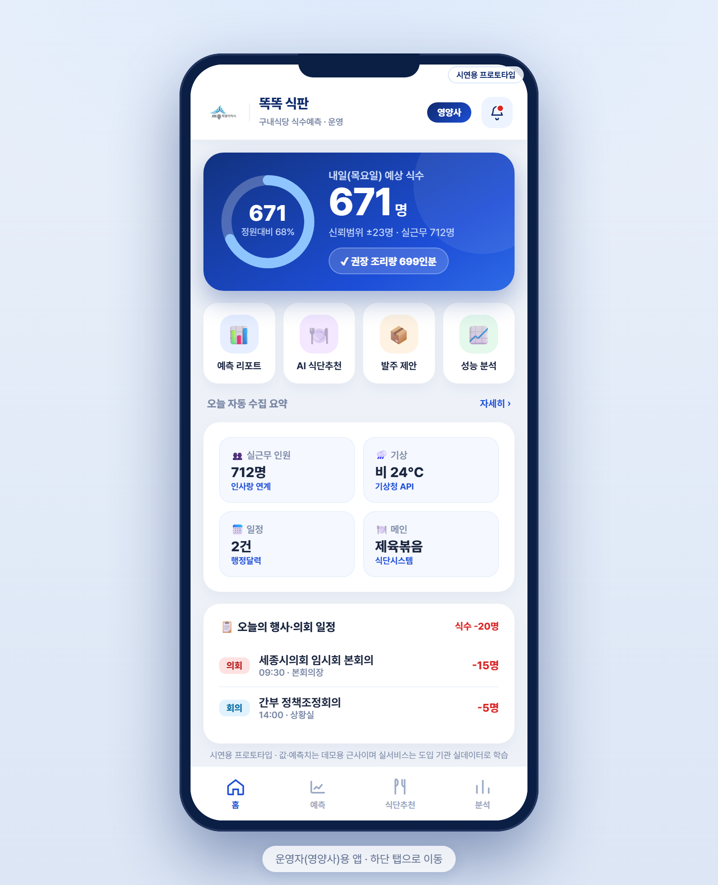
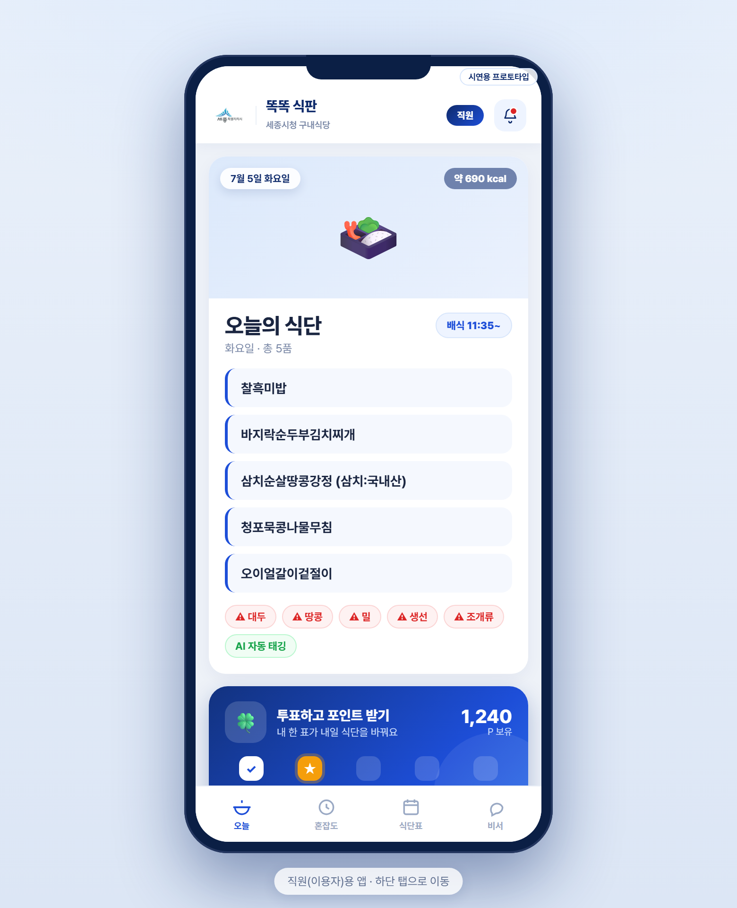
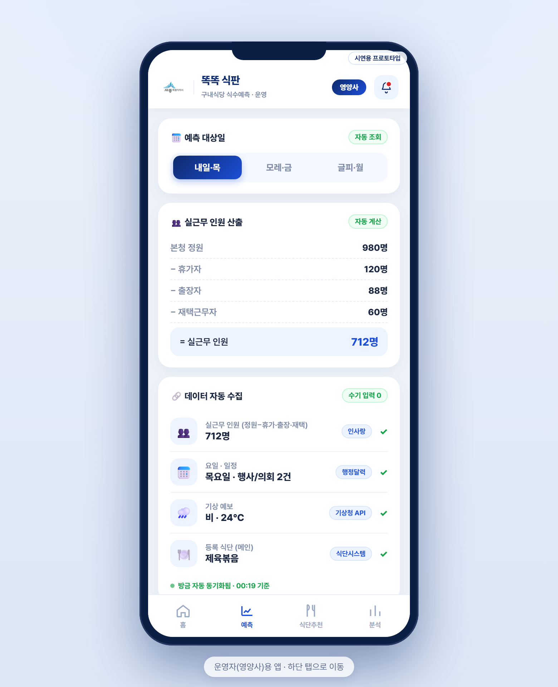
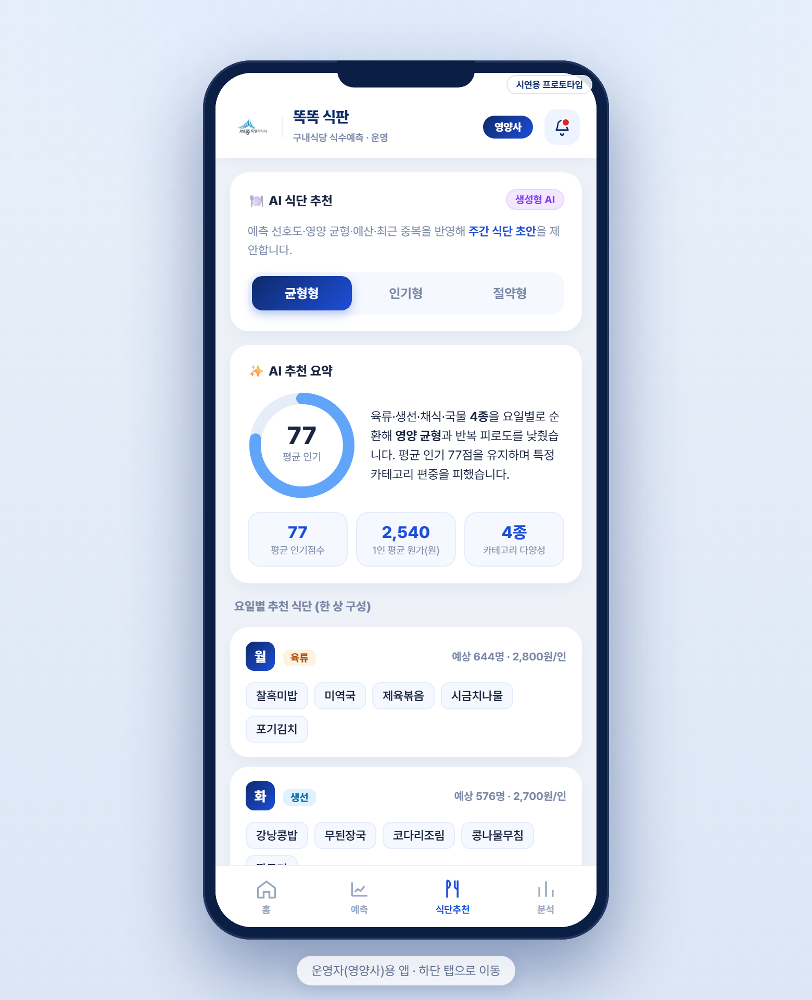
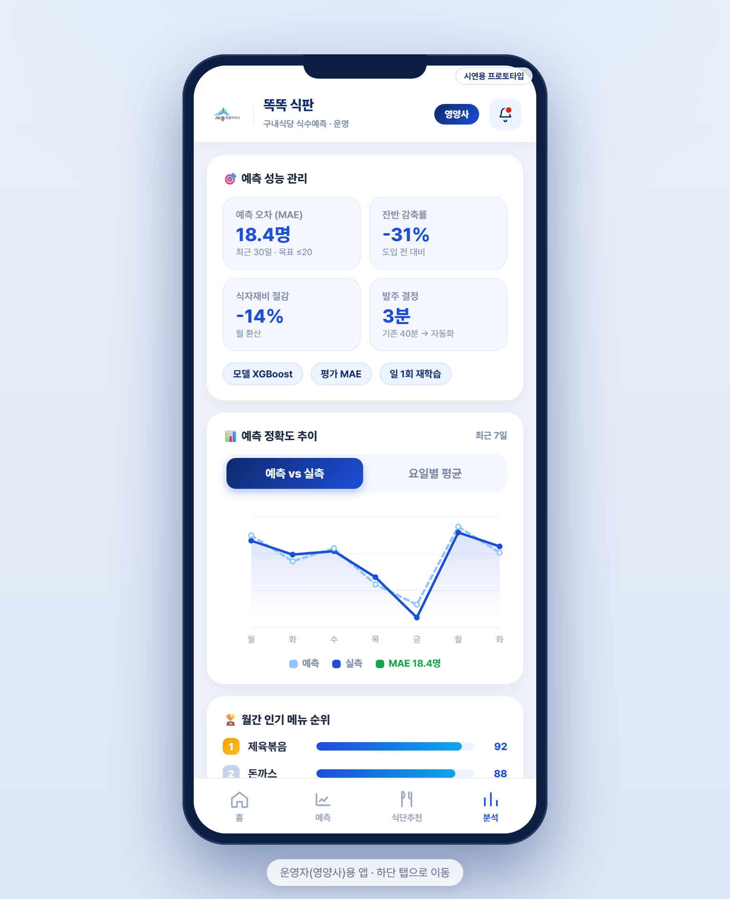
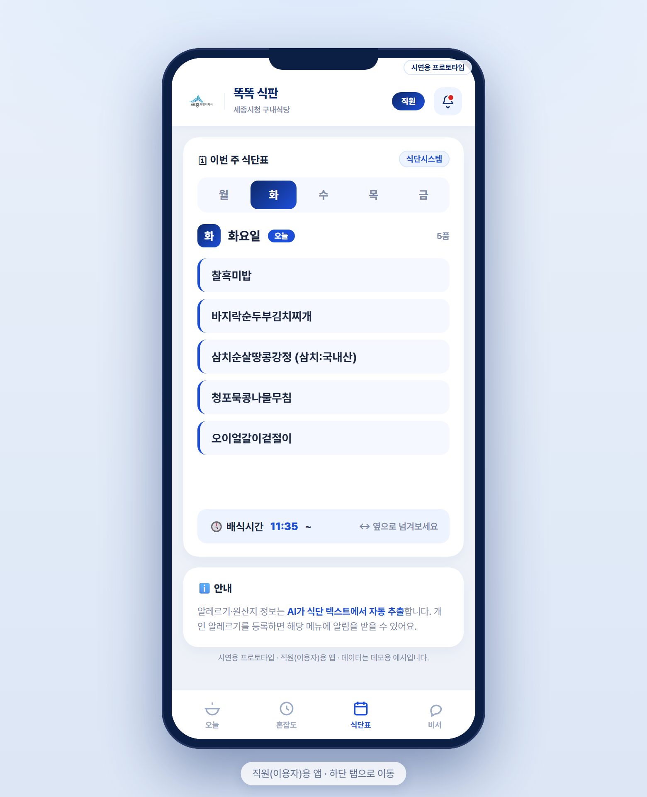
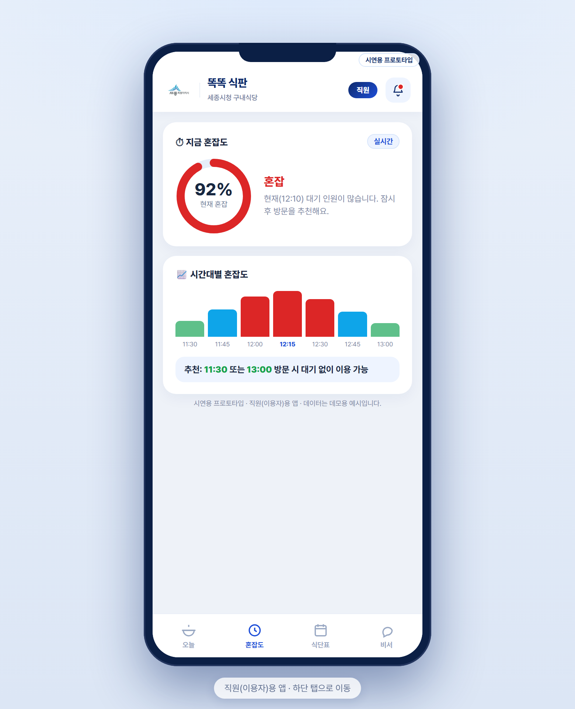
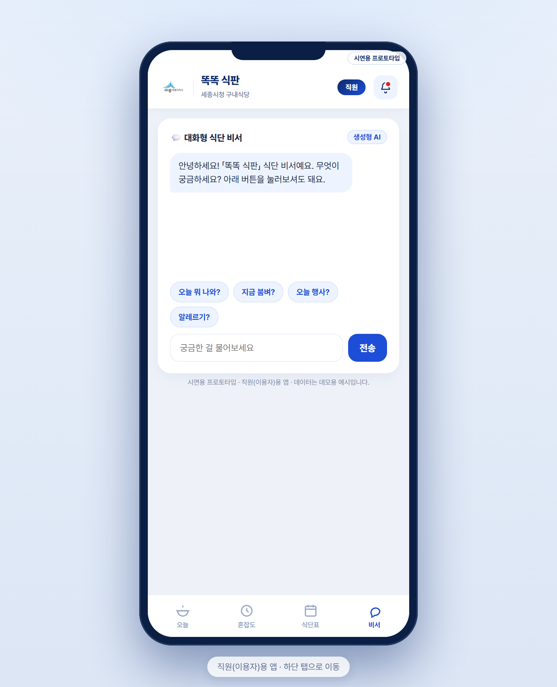

요일·날씨·메뉴·연가·출장까지 매일 사람이 종합 판단하기는 어렵습니다.
버려지는 잔반이 곧 식자재비·처리비·탄소 낭비입니다.
메뉴 소진·급한 변경으로 직원 만족도가 떨어집니다.
몇 인분 만들지(적정 조리량)와 그 근거를 알려줍니다.
오늘의 식단·붐비는 시간·만족도 투표를 제공합니다.


근무 인원·날씨·메뉴·일정을 사람 손 없이 자동으로 모읍니다.
과거 패턴을 학습한 AI가 내일 식수를 계산하고, 그 이유까지 설명합니다.
영양사에겐 적정 조리량, 직원에겐 식단·혼잡도를 안내합니다.






정확히 예측할수록 남기는 음식이 줄어듭니다.
오래 걸리던 발주 판단을 자동화하고, 인사 시스템과 연동해 실수를 줄입니다.
붐비는 시간을 안내해 대기를 줄이고, 잔반을 줄여 탄소 배출을 감축합니다.
다른 기관 구내식당에도 그대로 적용할 수 있는 데이터기반행정 사례입니다.
식수 기록·인사(인사랑)·기상청·식단시스템이 이미 운영 중입니다. 새로 모을 필요 없이 '연계'만 하면 됩니다.
요즘은 AI가 코딩을 돕는 '바이브 코딩'으로 앱을 짧은 기간·적은 비용에 만들 수 있습니다. 오늘 보신 작동하는 프로토타입도 이렇게 제작했습니다.